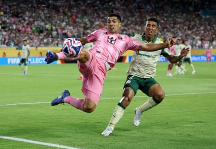

I nside the corporate monstrosity hides something that’s actually quite lovely and joyful and organic. It’s burrowed down real deep, beneath layers and layers of maximalist nonsense. But it’s in there somewhere, a good soccer tournament, cloaked by all the avarice and bombast, in spite of itself and those responsible for it.
It’s true: the Club World Cup and its new summer format haven’t been all bad. The group stage, which concluded on Thursday, offered fun and competitive teams. It served up a few genuinely enthralling games, especially in the clashes between the European and South American sides. The fans of some teams – the indefatigable singing and chanting of Boca Juniors’ and River Plate’s barras ; the churning sea of red hopping up and down for the Urawa; the clapping and singing Wydad fans; the drumming and dancing Brazilians crisscrossing the nation in the wake of their four thriving clubs – injected the proceedings with exactly the kind of summer tournament folklore and fever you should hope for. We’ve even seen some kit design excellence – thank you, Botafogo.
We’ve gotten some Lionel Messi almost-heroics and then some certified Messi heroics . We were given a vintage Luis Suárez goal, bullying the ball into the net. We saw the European champions Paris Saint-German savage Atlético Madrid 4-0, only to turn around and lose to one of those pesky Brazilian sides, Botafogo. Like many World Cups, there was a European giant that disappointed in not making it past the groups. This time, it was Atléti.
While the Brazilian delegation offered up good teams and good fans, the Argentinian mission only sent good fans, bringing color and noise as both River and Boca were knocked out in the group stage and looked decidedly overwhelmed even by mediocre opposition.
Meanwhile, Flamengo comprehensively beat 10-man Chelsea 3-1 . Borussia Dortmund was held scoreless by Fluminense and almost embarrassed by Mamelodi Sundowns, flirting with giving away a 4-1 lead. The only group not to yield compelling theater was G – which was dominated by Manchester City and Juventus (until City smashed Juve 5-2), at the cost of Al Ain and Wydad – since Group H saw Real Madrid stunned by a Al-Hilal in a 1-1 tie.
After all the overcooked buildup and grandiose promises, the tournament’s opening fell flat , clouded over by the rumors of Ice raids . That the urgency in the action arrived eventually should be credited to the non-European teams. They have been the primary suppliers of the fun.
Inter Miami’s Luis Suárez in action against Palmeiras.Photograph: Hannah McKay/Reuters
Still, all of these pleasing displays of soccer and the things that make it wonderful have materialized as a kind of act of defiance. A great many things are still wrong with the unwieldy Club World Cup .
The venues are too big. While 14 games have drawn over 50,000 fans, there have been no sellouts. The impact of good crowds was diminished by Fifa’s insistence on playing in America’s biggest arenas. Another 14 games drew fewer than 20,000, suggesting using Major League Soccer facilities for a lot more games might have been a good idea.
It was also a grind, with four games a day for most of the group stage, and requiring a finalist to slog through seven matches on the back of, or in the midst of, the punishing domestic club seasons. The timing is all wrong, confronting the players with the same catastrophically hot weather that will bewitch next summer’s World Cup proper . There was Fifa’s cowardice in removing anti-racism signage, and then bringing it back for a single day . For 63 games, we must suffer the ludicrous spectacle of bored players ambling through the thin puffs of smoke and shimmering lights as an announcer gives them the full heavyweight-championship-of-the-world boxing match treatment during pre-game introductions. Also, whatever the hell that was in the Oval Office with Donald Trump, Fifa president Gianni Infantino, and the bewildered Juventus players and executives – hopefully a nadir in Infantino’s persistent cozying up to Trump.
It’s a lot – probably too much – of everything. And in failing to meet its own impossible ambitions, the Club World Cup has made no imprint whatsoever on the culture.
And yet the idea of the thing clearly isn’t the problem. There is a more modest, pared-down version of this competition that could be a success, with an emphasis on the competition rather than the revenue and the overplayed stakes. If it was brought along slowly and nurtured as a growth play, rather than announced as the biggest thing to ever happen right at the outset, there is an event there that could enrich the sport. Eventually.
- This is an extract from Soccer with Jonathan Wilson, a weekly look from the Guardian US at the game in Europe and beyond. Subscribe for free here. Have a question? Email soccerwithjw@theguardian.com .
- Jonathan Wilson is on vacation, so we’ll have a series of guest writers on the newsletter. We’ve also changed up the schedule. This week’s is on Friday to coincide with the end of the Club World Cup group stage. The next one will come on Monday 7 July, once the semi-finals are set and the Gold Cup has been won. We’ll be back in your inbox every Monday from then on.